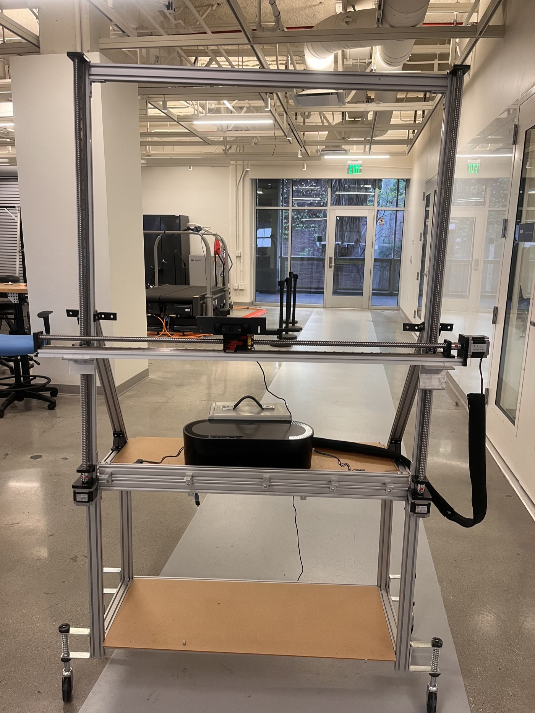

Robotic Data Collection

Context
This was a two-quarter independent research project. The starting point was a single, deliberately open-ended instruction: build an autonomous system that collects visual data on plants. There were no specifications, no reference design, and no constraints beyond that sentence, so the entire direction of the project was mine to define.
I took it from zero. I did the design, sourced and ordered the parts, machined and 3D-printed the custom components, assembled the physical system from nothing, and built the full software and control pipeline from scratch. The result is a self-supporting rig that scans a camera through a programmable 2D grid and autonomously captures and logs position-tagged, timestamped images for long, unattended plant-monitoring experiments.
I approached the build in two parts: first the physical system, which was by far the harder half, and then the software and control pipeline that brings it to life.
Part 1: Building the Physical System (the toughest part)
The machine is built in two halves: a wheeled lower body that forms the base, and an upper body carrying three actuators that drive the camera along vertical and horizontal axes. Getting these to behave as one rigid, self-supporting structure was the hardest part of the project.
The core challenge was structural integrity under continuous load. The 3D-printed parts connecting the actuator rails kept deforming and breaking, so I moved the load-bearing joints to metal, fastening rails directly through existing screw holes and machining custom 90° aluminum brackets with triangulated 60° support rods to tie the two halves together. I then eliminated every small degree of freedom that made the frame flex: shaft collars to stop members sliding or twisting, clamps to lock a spring base that left it sitting unevenly, and caliper-exact re-cut aluminum rods so the upper body seated cleanly on the lower one. Finally, I cut acrylic panels to size to stiffen the base and house the electronics.
The end result is a tall, narrow frame that stands on its own, transports without issue, and withstands the dynamic loads of all three actuators with no visible deflection.
Part 2: Software and Control Pipeline
The goal on the software side was to make the rig genuinely autonomous. The early setup reversed direction by hitting physical limit switches, which was impossible to customize and left no link between actuator position and where images were captured.
I built a Python–Arduino pipeline that coordinates both axes over serial communication. Instead of hitting end-stops, the actuators move a set number of steps before reversing or changing height, turning the workspace into a defined grid where the exact position of every capture is known. At each position the Python side captures an image, saves it under a structured filename, and logs the height, horizontal position, cycle number, and timestamp to CSV files organized in date-based folders. To run unattended, the system pulls the current time and automatically starts and stops the actuators at set hours.
I validated the full pipeline by running a real experiment: a seven-day image series of heat-treated apples and oranges, exactly the kind of position-tagged dataset the system was built to generate.